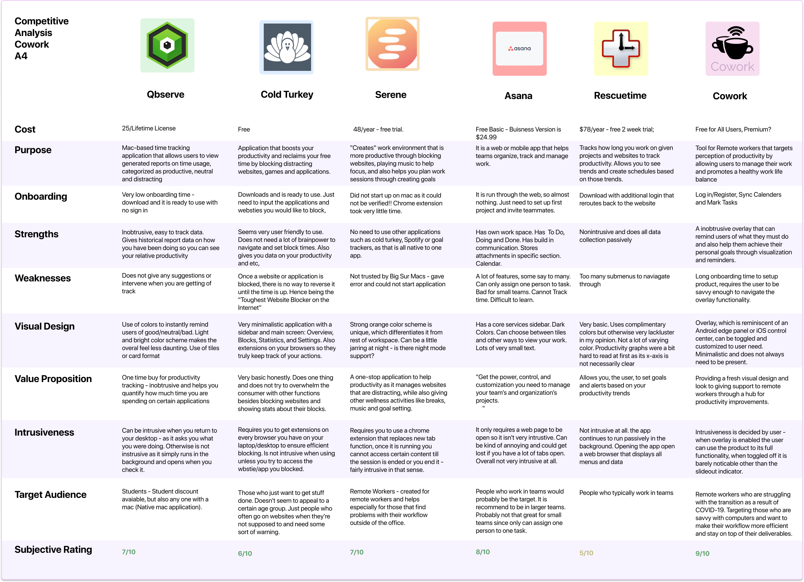
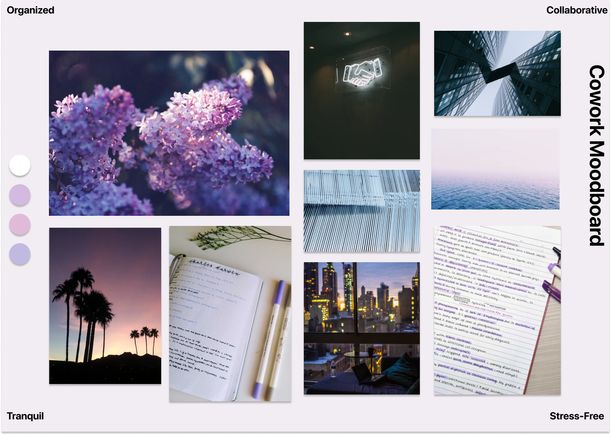

What I brought to the table
Team: Myles Wright, Jay Acuna, Vanessa Keodara
Tools: Figma, Google Docs, Google Forms
Role: UX Researcher, UX Designer
Timeline: 5 weeks
Context
In Fall 2020 I was a part of a team of 4 undergraduate students at UCSD working on a quarter long project for an upper division class on Prototyping. We were given several prompts with topics that were especially relevant to the overall social context set by the COVID-19 Pandemic, and we honed in on a problem space of remote work, and the unforeseen pain points that came with transitioning to a digital work life.

Suuuuper sneak peek into solution
What we knew going in
With new situations comes new challenges, and in a quarter long final project, a team of 4 individuals including myself attempted to tackle these new novel problems that arose as a result of COVID-19. While the ever expanding impact has touched just about every nook and cranny of our world, one prominent by-product of social distancing has been the drastic shift to digital learning and in particular remote working. To better understand this issue, my team and I collected research on real people who have felt the effects of this issue by observing out in the wild and talking to people first hand, and then have used those insights to help create a solution to the demonstrated need for creating less friction in this new workplace.
Many signs point to remote working not being a trend, but rather something that has substance to stay (As shown by the screenshot from a survey conducting by PWC on remote work satisfaction).
Due to this, there are concerns about the people who are lost in the cracks of this change. What happens to the people who struggle with access to a stable source of internet, or a lack of personal devices? What happens to the individual whose job cannot be done using Zoom? What happens to the individual who never signed up for Remote work, but might be pigeon holed into continuing like this for the foreseeable future?

What do we need to learn?
These sorts of questions were what we were trying to explore in our initial ethnography study where we observed digital workers vent their frustrations onto anonymous forums and facebook groups.

To better understand this problem space we conducted some competitive analysis on products aimed towards digital productivity, as shown in the matrix below.
From this we were able to create leads on potential pain points to explore, which we affirmed using user surveys and interviews. What we found was that a core problem with remote workers is due to the information overload that comes with remote working. What would usually be a small conversation, balloons to an email, a meeting invite and an accompanying slack notification.

Adding into that was a growing sense of stress that this causes, as well as increasing deadlines and worsening work-life balances that stem from the lack of office. Some articles have noted that WFH can often add 3 hours of working onto your schedule as you “gain” time from not having to commute to the office.
Synthesizing our research
Research found that one of the core pain points was that a user’s perception of their productivity did not match up with reality.

Our two main personas are defined above, we want to find ways to fight loneliness that comes with social distancing, and managing the constant clutter of notifications while still being relatively carefree.
To help us come up with a problem statement to crack, we created some storyboards that step through the common problems that people are having.

Research found that one of the core pain points was that a user’s perception of their productivity did not match up with reality. In that they were more productive than they thought, but felt overwhelmed or inadequate because they felt like they were not bringing value to their teams. Additional pain point found that with remote working came the massive influx of digital tools that felt overwhelming, and added to the general stress.
This research led us to the problem statement:
How could we target this problem?
To target these specific pain points we broke it down to the emotions that people felt, as collected in our user surveys. Plotting that onto a word map, we saw a bunch of repeated words: “STRESS”, “DISCONNECTED”, “ISOLATED”, “ANXIOUS”
Using these emotions as a guide, we wanted to find ways to evoke the opposite feelings that could help to amend their spirit, such as feelings of calmness, tranquility, and self assurance. One of the ways we targeted this was the overall look of the product, it was light, and flowery, and we took a lot of time to craft a mood board that helped to create a feeling of low effort.

On top of that, the idea itself needed to be as stress free and unobtrusive as possible. Given this constraint, we searched for similar design patterns and took a lot of inspiration from Apple's Big Sur Overlays that were coming out at the time.
What we came up with was a lightweight overlay that could be pulled out at any time and synthesizes the user's core communication platforms to allow them to manage flurries of notifications, as well as track and plan their coming work weeks with ease.
Overlays are great in that they can be completely minimized when not needed, but are always present if the user desires it.

What we came up with is very much aimed at removing the need to check multiple notification zones as once, as mentioned in the problem statement, and instead being able to visualize their own goals and realize the level of their own productivity.

What this also does is give a lot of power to the user in determining what to visualize, in ways that would actually help them.
What we tried... and what failed
We did some basic user testing over Zoom using the master apprentice model as a guiding influence, the task list is shown below.

By testing extensively with some of the core functionalities, we were able to confirm what information the user wanted on their overlay by conducting post-test interviews with users who fit into our target audience.
By asking questions like "What would you want to see here?" we were able to add some new items like integrating with music, as well as testing core functionalities such as the overlay toggle, which changed extensively throughout the project.

From this, we made several changes, such as the color of the overlay itself due to accessability concerns for those with visual impairments, as well as removing redudant links in the accompanying app.
Before

After

Before

After

What we finalized on
The final piece to the puzzle was really figuring out what the user wants to be displayed on their overlay, and this was brought directly from the user research phase.

We wanted to put the power into the user's hands, so we gave a basic set up of integrations with applications that they would use often as shown in our user research, such as Slack or Teams, and other accompanying applications such as Spotify.

The rest, the user could input what they want to see and manage their overlay on the accompanying CoWork Application, which is shown below.
Most users felt unsure about their own ability, and their own productivity as a result of this rapid transition, so we wanted to include ways to plot out their productivity, such as in gantt charts or visualizing their tasks for the week.

Many often reported feeling imposter syndrome, as they had started a new job under these different circumstances. To target this, we wanted to quantify a user’s productivity through logging their own personal goals. This way they could track and visualize how they are performing towards these benchmarks in real time. This would let them also be assured that their performance was indeed at least performing up to standards, if not above it.

This would both reduce the clutter, which helps to ease their cognitive load, as well as visualize their progress to this week's goals!
What I took from this
This multi week project taught me how to manage my time effectively, and to distance myself from the assumptions that comes with being inside the population base that my application was designing for.
A lot of the user research that we collected shocked me in that it went so far against my own beliefs, but getting real data to back this up helped to dispel this assumption. One of the most important takeaways that I got however, was learning how to work effectively in a team, and how to manage designing different aspects of a product
and managing that.
There were times where decisions were made on parts of the product that I wasn't working on, and I didn't agree with that. However, meeting up to learn about my group member's design decisions, and finding ways to improve it together helped me to become better at communicating my ideas, and also to understand and empathize with others, which is the bread and butter of design.
What I would do differently
If I had some more time, I would validate my new solution on UserTesting.com, and iterate based on that. I would also spend less time on the research phase, as we spent about 70% of the project there, where I would have rather had some more time to ideate.
I would have also loved to get some time to get additional feedback in middle stages - due to the fast nature of the quarter system, we didn't have as much time to check in with each other, so there were some decisions made by ourselves.
Back to Portfolio